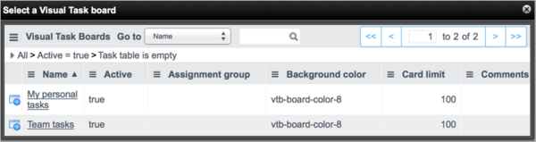

Using Visual Task Boards
| |
Note: This article applies to Fuji and earlier releases. For more current information, see Visual Task Board at http://docs.servicenow.com
The ServiceNow Wiki is no longer being updated. Visit http://docs.servicenow.com for the latest product documentation. |
Contents
- 1 Overview
- 2 Creating Task Boards
- 3 Deleting Task Boards
- 4 Adding and Modifying Lanes
- 5 Working with Task Cards
- 6 Adding and Removing Task Board Members
- 7 Viewing Board Information
- 8 Toggling the List View
1 Overview
Any user can create, view, and edit freeform, flexible, and guided visual task boards, and share these boards for other users to view and edit.
| |
Note: If the Collaboration feature is enabled, users can perform additional actions related to task boards. For more information, see Using Visual Task Boards with Collaboration. |
2 Creating Task Boards
You can create a freeform board and add cards from multiple task tables, or create a flexible or guided board from an existing list of records.
2.1 Creating Freeform Boards
You can create new freeform task boards for tracking any kind of task or project.
- Navigate to Self-Service > My Task Boards.
- Click the add board icon (+) beside Boards you own.
- [Optional] Click the board name and enter a new name.
After the board is created, board members can:
- Add and modify lanes
- Create and modify task cards
- Add and remove members
- Configure the look and feel
2.2 Creating Flexible and Guided Boards
You can create a task board for any table that extends Task, such as Incident or Change.
- Navigate to the list for any table that extends Task, such as Incident > All.
- [Optional] Create a filter to show only the records you want to work with. For example, you might filter out incidents that are not assigned to you.
- Task boards created from filtered lists display the filter conditions under the board title.
- Right-click a column header and select Show Visual Task Board.
- The type of board that is created, and the lanes that appear on the board, depend on which type of column you select. If you select a reference or choice column, the board is a guided board. Each lane in a guided board represents one possible value for that column and the cards appear in the appropriate lane. For example, if you create a guided task board for incidents using the State column, the board shows one lane for each incident state, such as New or Closed. If you select a column that is not a reference or choice, the board is a flexible board and the default lanes To Do, Doing, and Done appear with all cards in the To Do lane.
- [Optional] Click the board name and enter a new name.
| |
Note: For guided boards created from choice fields, the system creates a lane for each possible choice value. For guided boards created from reference fields, the system creates a lane only for each value in use by a task card. Lanes are added and removed as card values change for the reference field lanes are based on. |
After the board is created, board members can:
- Add and modify lanes (Flexible boards only)
- Create and modify task cards
- Add and remove members
- Configure the look and feel
3 Deleting Task Boards
You can delete any board you own. Deleting a board does not impact the underlying task records. However, you cannot recover a board after you delete it. To delete a task board, navigate to Self-Service > My Task Boards. Under Boards you own, point to a board and click Delete Board.
4 Adding and Modifying Lanes
When you create a new freeform or flexible task board, it includes the default lanes To Do, Doing, and Done. Unlike guided boards, these lanes do not match possible field values. You can change these names and add new lanes to accommodate the task workflow you want to track.
You cannot add or remove lanes from guided boards.
To add lanes:
- Open a freeform or flexible board.
- Click Add Lane.
- A new, empty lane appears to the right of the existing lanes.
- Enter a title for the lane, then press Enter.
After adding a lane you can:
- Change the order of lanes by clicking the left and right arrows at the bottom of the lanes.
- Delete a lane by clicking Delete Lane at the bottom of the lane. Delete Lane appears only if the lane does not contain any task cards. If you want to delete a lane that contains task cards, drag the task cards to another lane or archive the cards and then click Delete Lane.
5 Working with Task Cards
You can add task cards, edit task card details, add labels to cards, and access the underlying task record the card represents, depending on the board type.
| |
Note: Each board can display up to 100 cards. When the number of tasks exceeds the maximum, the system determines which cards to show on the board by most recent update time. |
5.1 Adding Tasks to Freeform Boards
You can add personal task cards directly to lanes on a freeform board. You can also add other kinds of task cards to a freeform board from a list or form.
5.1.1 Adding Personal Tasks to Freeform Boards
You can add cards directly to a freeform board lane. These cards are called personal tasks and represent records on the Private Task [vtb_task] table.
- On a freeform board, click the add card icon (+) beside the lane title. Alternatively, click Add Task in a lane that contains at least one card.
- A new task card appears in the lane.
-

-
- Enter a short description for the new task card.
- Click another area of the board or press Enter to save the card.

{kind=link}
| |
Note: If the Collaboration feature is enabled, you can add a personal task to a freeform board from a conversation (starting with the Fuji release). |
5.1.2 Adding Other Kinds of Tasks to Freeform Boards
You can add cards to a freeform board from any table that extends Task. These cards represent records on whichever table you add them from. You can add cards from multiple task tables, such as Incident or Problem, to the same freeform board.
To add a task record to a board from a form:
- Open a task record, such as an incident.
- Click the menu icon (
 ) or right-click the form header to show the context menu.
) or right-click the form header to show the context menu. - Select Add to Visual Task Board.
- A pop-up window appears with a list of freeform task boards.
-
- 
-
- Select the name of the board you want to add the card to.
{kind=link}
When you add a task to a freeform board, a confirmation message appears. Click the board name to view the board. The task appears in the first lane by default.
To add a task record to a board from a list:
- Navigate to a list of task records, such as Incident > Open.
- Perform either of the following options:
- To add one task, right-click a record and select Add to Visual Task Board.
- To add multiple tasks, select the check box beside each record you want to add and select Add to Visual Task Board from the actions choice list.
- A pop-up window appears with a list of freeform task boards.
- Click the name of the board you want to add the card to.
5.2 Adding Tasks to Flexible or Guided Boards
You can add cards directly to a flexible or guided board lane. These cards represent records on whichever table the board is associated with.
- On a flexible or guided board, click the add card icon (+) beside the lane title. Alternatively, click Add Task in a lane that contains at least one card.
- A pop-up window appears with a new record. Fields are populated based on any filter conditions for the board and, for guided boards, the lane you add the card to. Consider the example of a guided board that shows incidents with the Software category, with a lane for each assignee. If you add a card to the ITIL User lane, the new incident record Category and Assigned to fields are automatically set to Software and ITIL User.
- Complete the form and click Submit.
- A new task card appears in the lane.
5.3 Editing Card Details
You can edit certain values on a card from the card details. Updating these values also updates the underlying task record. When you click a card, the details for that card appear in a pop-up window. You can also click an entry in the Activity stream to view the details for the card described in that entry. From the card details you can:
- Rename the card by clicking in the card title.
- Modify the Description.
- Add or remove file attachments.
- View or add comments in the Activity section.
- Label the card by clicking on one or more of the available labels.
- Assign the task to a user.
- Archive the card (freeform boards only).
- Move the card to a different board (freeform boards only).
{kind=link}
5.4 Labeling Task Cards
Labels help categorize tasks and visually distinguish them on the task board. You can filter the visible tasks to show only those with certain labels. Labels appear on cards as colored dots in the top-right corner.
{kind=link}
You can add one or more labels to a task card. To add a label to a task card:
- Open the card details for a task.
- Under Labels, select one or more labels.
- Close the card detail pop-up window.
Alternatively, drag a label from the quick panel directly to a task card.
You can use configuration options to rename or disable labels or to hide labels altogether.
5.5 Assigning Tasks to Users
Assignees represent ownership of task cards and the associated records. You can filter the visible tasks on a board to show only those assigned to a certain user. Assignees appear on cards as avatars in the bottom-right corner.
{kind=link}
You can assign a task to one user at a time. To assign a task to a user:
- Open the card details for an unassigned task.
- Under Assigned to, click Click to assign user.
- Enter a user's name or select a user from the drop-down menu.
- Close the card detail pop-up window.
{kind=link}
Alternatively, drag a user from the quick panel directly to an unassigned task card.
| |
Note: For flexible and guided boards, assignment rules on the associated table may restrict who you can assign a task card to. If you attempt to assign a task card to a user in a way that violates an assignment rule, a notification appears and the assignment does not take place. |
5.6 Archiving Cards
Archived cards do not appear on the board. You can archive cards from a freeform board to reduce visual clutter and make more active cards easier to find. To archive a card, view the card details and click Archive Card.
To see a list of archived cards for the current board, open the board configuration menu ( starting with Fuji, in Eureka) in the top-right corner of the board and click View Archived Tasks. In the Archived Tasks pop-up window, you can view archived card details or restore archived cards to the board.
starting with Fuji, in Eureka) in the top-right corner of the board and click View Archived Tasks. In the Archived Tasks pop-up window, you can view archived card details or restore archived cards to the board.
{kind=link}
5.7 Accessing Task Records
You can open the form view of any task card. Viewing a task record on a form allows you to see all fields for that record, including fields that are not available in the visual task board interface.
To access the task record for a card, click the task number in the bottom-left corner of the card or in the top-left corner of the card details pop-up window.
5.8 Moving Cards to Different Lanes
You can move a card from one lane to another. Simply drag and drop the card in the target lane. When you move a card to a different lane on a guided board, the field on which the lanes are based is updated to reflect the new lane value. Note that all mandatory fields on a record must be filled in to move the associated card to a new lane. For example, assume you have a guided board based on the Incident [incident] table, with a lane for each State. The Close code and Close notes fields become mandatory when the State changes to Closed. If you attempt to move an incident card from the New lane to the Closed lane, a pop-up view of the form appears and prompts you to fill in the mandatory fields.
5.9 Moving Cards to Different Boards
You can move cards from one freeform board to another. To move a card, view the card details and click Move Card. In the pop-up window that appears, select a freeform board and choose a lane to move the card to.
6 Adding and Removing Task Board Members
You can add and remove board members using the members tab of the activity stream, starting with the Fuji release. If you are using visual task boards in Eureka, see the previous version information.
To edit members:
- Open the activity stream.
- Click the members tab.
- To add a member:
- Click the plus icon.
- Enter a user's name or select a user from the drop-down menu.
- To remove a member:
- Click Edit.
- Click the X icon by a user's name.
- Click Done.
{kind=link}
6.1 Adding and Removing Task Board Members in Eureka
You can add and remove board members using the quick panel. To add a board member, click the add member icon () and select the user you want to add. Use the search box to show only users whose names start with the text you enter. An avatar that shows the user's name and image, if available, is added to the board for each member.
{kind=link}
To remove a board member, click the remove from board icon (X) beside the user's avatar. You cannot remove the owner of a board. Removing yourself from a board causes the board to automatically close in your browser.
6.1.1 Promoting Assignees to Board Members
When you create a flexible or guided board, users assigned to the initial tasks appear in the board members list as assignees. You can filter the tasks by assignee like you can by member. However, assignees do not have access to the task board. Assignees are distinguishable from board members by a grey background.
{kind=link}
7 Viewing Board Information
You can display key information about the board by clicking the board information icon () by the board name (starting with the Fuji release). A flyout appears and displays the following information about the board:
{kind=link}
- Name
- Board type
- Filter conditions (flexible and guided boards only)
- Owner
- Number of lanes
- Number of cards
{kind=link}
8 Toggling the List View
For flexible and guided boards, you can switch to a list view of the tasks on the board (starting with the Fuji release). Simply click List by the board filter.
{kind=link}
A list of records appears in place of lanes and cards. You can use the list like any other list except you cannot use breadcrumbs. To switch back to the lane view of the tasks, click Lanes by the board filter.
Lane view of a task board
List view of a task board
{kind=link}
{kind=link}